Non-Covalent Functionalisation of Carbon Nanotube & Graphene Films
Introduction
In ?@sec-fabrication, methods of fabricating carbon nanotube and graphene devices were discussed, and in ?@sec-pristine-characteristics, it was demonstrated that these devices are highly sensitive to environmental changes in an aqueous environment. However, for specific sensing, the devices require biochemical functionalisation. The sensing signal is picked up by attached receptors, while the transistors act as transducers for the received signal. Receptors previously used with carbon nanotube and graphene devices include aptamers [@Khan2021; @Nguyen2021; @Shkodra2021; @Nekrasov2021; @Mishyn2022; @Cassie2023] and a range of proteins [@Lerner2014; @Ahn2020; @Tong2020; @Wang2020], including animal odorant receptors [@Goldsmith2011; @Lee2018; @Murugathas2019a; @Murugathas2020; @Moon2020; @Yoo2022]. A common approach to attaching receptors to the transducer involves the use of a linker molecule to tether the receptor to the transducer. Verifying that this linker molecule is bridging between the transducer and the receptor element is important for a complete understanding of the behaviour of these sensors. This verification involves providing evidence for effective attachment of linker molecule to the transducing device channel, then showing successful tethering of odorant receptors and other biomolecules to the attached linker molecule.
This chapter therefore takes some time exploring the following selection of available linker molecules for specific biosensing: 1-Pyrenebutanoic Acid N-hydroxysuccinimide Ester (PBASE), 1-Pyrenebutyric Acid (PBA), Pyrene-PEG-NTA (PPN) and Pyrene-PEG-Biotin (PPB). The mechanisms underlying functionalisation with each linker are described. A literature review and analysis techniques including Raman spectroscopy, fluorescence microscopy and electrical characterisation are used to understand the impact of various experimental parameters on the functionalisation process. Electrical characterisation of linker attachment to the transducer was also performed to act as a comparison tool when performing functionalisation with insect odorant receptors. Numerous obstacles to successful functionalisation are identified and discussed, including PBASE hydrolysis, linker coverage, non-specific attachment, photoresist contamination, channel hydrophobicity and the coffee-ring effect. Approaches to overcome these obstacles were identified, tested and the results characterised. This process provided assurance that successful attachment of linker molecule to the carbon nanotube network or graphene region could be achieved.
Attachment of 1-Pyrenebutanoic Acid N-Hydroxysuccinimide Ester
Pi-stacking
Pi-stacking or \(\pi-\pi\) interaction is a specific type of non-covalent bonding which occurs due to dispersion forces between unsaturated polycyclic molecules [@Perez2015]. It has been argued that this label is unhelpfully specific and a misrepresentation of what can be simply classed as a type of Van der Waals bonding [@Martinez2012; @Perez2015]. However, as the use of the term is widespread in the literature, it is also used here for the sake of clarity. A wide range of linker molecules with aromatic moieties, such as pyrene, have been used for modification of polycyclic carbon nanotubes and graphene via pi-stacking [@Hermanson2013-16; @Perez2015; @Zhou2019; @Mishyn2022]. Pyrene-based pi-stacking underlies all the functionalisation processes used in this thesis. Figure 1 demonstrates how a pyrene-based linker molecule can be used to attach a receptor element to a thin-film transducer. The linker element attaches to the biomolecule via covalent bonding with a nucleophilic functional group; linker attachment can occur via biomolecule aminos, carboxyls, hydroxyls, thiols/sulfhydryls, phenols, imidazoles and so on [@Fruh2011; @Dung2018].
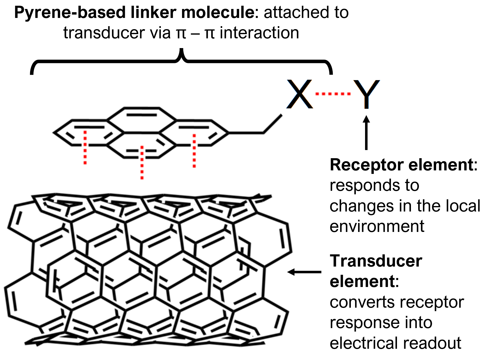
Figure 1: Attachment of pyrene-based linker molecule pyrene-X and receptor Y to a carbon nanotube, representing the transducer element of a field-effect transistor. Figure adapted from [@Carbonnanotube], used under the CC BY-SA 4.0 license.
Comparing Attachment Methods
1-pyrenebutanoic acid N-hydroxysuccinimide ester (also known as 1-pyrenebutyric acid N-hydroxysuccinimide ester and 1-pyrenebutanoic acid succinimidyl ester, and by the acronyms PBASE, PBSE, PyBASE, PASE, PYSE, PSE, Pyr-NHS and PANHS) is a pyrene-based linker molecule commonly used for tethering biomolecules to the carbon rings of graphene and carbon nanotubes. A ball-and-stick model of the PBASE molecule is shown in Figure 2. The pyrene moiety, highlighted blue in Figure 2, non-covalently bonds to the carbon rings of the transducer. Previous modelling has shown that when PBASE attaches to graphene, it may take on one of two different locally stable conformations (one straight, one bent) [@Oishi2022]. The N-hydroxysuccinimide (NHS) ester group, found within the structure highlighted red in Figure 2, can undergo a nucleophilic substitution reaction with primary amines attached to biomolecules, tethering them with an amide or imide bond [@Chen2001; @Hermanson2013-16; @Hermanson2013-3; @Shkodra2021; @Mishyn2022].
Figure 2: Structure of 1-pyrenebutanoic acid N-hydroxysuccinimide ester (PBASE) visualised in XCrySDen software [@Kokalj1999]. Blue corresponds to hydrogen, yellow to carbon, red to oxygen and grey to nitrogen. The NHS ester is the ring structure on the right hand side of the figure. Figure reproduced from [@Oishi2022], used under the CC BY-NC-ND 4.0 license.
The non-covalent functionalisation of proteins onto a single-walled carbon nanotube using PBASE was first reported by Chen et al. in 2001 [@Chen2001]. Two successful methods for protein functionalisation and immobilisation were reported, with the only differences being the solvent used to dissolve the PBASE powder (dimethylformamide, methanol) and the final concentration of the resulting solutions (6 mM, 1 mM respectively). PBASE powder appears to dissolve poorly in methanol at higher concentrations, which might explain the use of different concentrations of PBASE with each solvent. An extensive comparison of methods used in the literature for PBASE functionalisation of carbon nanotube and graphene devices with aptamers and proteins is given in Table 1. Several listed works directly cite Chen et al. when discussing functionalisation with PBASE [@Cella2010; @Ohno2010; @Zheng2016]. The other works listed do not explicitly reference Chen et al. in their methodology; however, the frequency of methods describing the use of 6 mM PBASE in dimethylformamide (DMF) and 1 mM PBASE in methanol indicate that other groups typically emulate the original process from Chen et al.
However, it is also apparent from Table 1 that there is a large degree of variation in the methods used for PBASE functionalisation. Various electrical characterisation, microscopy and spectroscopy techniques have been used to demonstrate successful functionalisation. Until recently, there has been little justification provided for the selection of variables used in the functionalisation procedure (e.g. length of time submerged in solvent containing PBASE), despite the widespread use of this process in the literature [@Hinnemo2017; @Zhen2018; @Wang2020]. Furthermore, a detailed investigation of PBASE functionalisation process variables has only been undertaken for graphene-based devices [@Zhen2018; @Hao2020; @Wang2020; @Mishyn2022]. This is surprising, given that multiple sources make an explicit link between sensitivity of functionalised devices and the density of surface functionalisation with PBASE [@White2008; @Hermanson2013-3; @Chen2014].
Zhen et al.[@Zhen2018], Wang et al.[@Wang2020] and Mishyn et al.[@Mishyn2022] have all claimed that carefully tuning the surface concentration of PBASE is required to avoid multilayer coverage of the graphene surface, as this negatively impacts sensing. Mishyn et al.[@Mishyn2022] used cyclic voltammetry to demonstrate that less receptor attachment to the graphene surface occurs when multiple layers of PBASE are present. However, none of these groups have presented analyte sensing results from their functionalised graphene devices. In contrast, Hao et al.[@Hao2020] found that maximising the PBASE surface coverage of a channel resulted in more sensitive aptameric sensing. The inconsistency in these recent findings mean more work is needed to understand the PBASE functionalisation process and achieve optimal biosensor sensitivity.
Table 1: Comparison of PBASE functionalisation processes. Experimentally optimised variables are marked with a star.
Solvent
Channel
Conc. (mM)
Incubation type
Time (hr)
Rinse steps
References
DMF
CNT
5
Immersed
1
PBS
Maehashi, 2007.
6
Immersed
1
DMF
Chen, 2001.
6
Immersed
1
DMF
Cella, 2010.
Graphene
0.2
Immersed
20
DMF, IPA, DI water
Gao, 2018.
1
Dropcast
6
DMF, IPA, DI water
Nekrasov, 2021.
5
Immersed
1
DMF, DI water
Hwang, 2016.
5*
Immersed
3*
DMF
Hao, 2020.
5
Immersed
4*
DMF, DI water
Mishyn, 2022.
6
Dropcast
2
DMF, DI water
Nur Nasufiya, 2020.
10
Immersed
2
DMF, PBS
Kuscu, 2020.
10
Immersed
1
DMF
Xu, 2017.
10
Immersed
12
DMF, EtOH, DI water
Khan, 2020.
50
Immersed
4*
MeOH
Wang, 2020.
2-Methoxyethanol
Graphene
1
Immersed
1
DI water
Ono, 2020.
Methanol
CNT
1
Immersed
1
MeOH, DI water
Zheng, 2016.
1
Immersed
2
MeOH
Kim, 2009.
100
Dropcast
1
DI water
Yoo, 2022.
Graphene
5
Immersed
1
MeOH, PBS
Ohno, 2010.
DMSO
CNT
10
Immersed
1
PBS
Strack, 2013.
It may also be the case that a specific functionalisation process is required for optimal sensitivity with the use of a specific type of receptor.
Once fastened to a bioreceptor via an amide or imide bond, the attachment to the linker molecule is not easily broken. However, prior to use in functionalisation processes, the NHS ester may react with any water present. This ester hydrolysis converts PBASE to its corresponding carboxylic acid, 1-pyrenebutyric acid (PBA), leaving it unavailable to react further with amine groups [@Hermanson2013-3; @Hermanson2013-5; @Mishyn2022]. If the amine group functionalisation is performed at close to neutral pH, within a \(\sim\) 1 hour period, and with a high concentration of bioreceptor present, competing hydrolysis should not have a significantly adverse impact on the functionalisation process [@Hermanson2013-3]. If PBASE is exposed to water during storage, 1-ethyl-3-(3-dimethylaminopropyl)carbodiimide (EDC) can be used to restore the NHS ester and enable the substitution reaction to take place (see Section 1.3).
I purchased PBASE from two suppliers, Sigma-Aldrich and Setareh Biotech. Sigma-Aldrich listed DMF and methanol as suitable solvents for dissolving PBASE, alongside chloroform and dimethyl sulfoxide (DMSO). Setareh Biotech indicated methanol can be used for dissolving PBASE. The two suppliers had conflicting information for suitable storage of PBASE, where Sigma recommended room temperature storage, while Setareh Biotech recommended storage of \(-5\) to \(-30\) °C alongside protection from light and moisture. Nuclear magnetic resonance (NMR) spectroscopy was used to verify the purity of PBASE from various suppliers. As water can react with PBASE to form unwanted byproducts, it appears that protection from moisture is particularly important. A particular emphasis was placed on detecting water presence in the received samples, considering the long travel time of the PBASE with uncertain storage conditions.
Figure 3 compares the shapes of hydrogen NMR spectra of PBASE from each supplier when dissolved in deuterated DMSO, alongside a blank deuterated DMSO spectrum. Both PBASE samples possessed characteristic chemical shift features between \(2.1-2.2\) ppm, \(2.8-2.9\) ppm, and \(3.4-3.5\) ppm. These chemical shifts roughly correspond to those seen in previous NMR spectra for PBASE [@NMR2]. The feature at 2.5 ppm represents the deuterated DMSO solvent, while the single peak between \(3.3-3.4\) ppm represents the water present in the sample. By comparing the area of these peaks, a rough estimate of the amount of water originally present in the PBASE sample can be obtained.
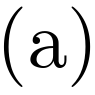
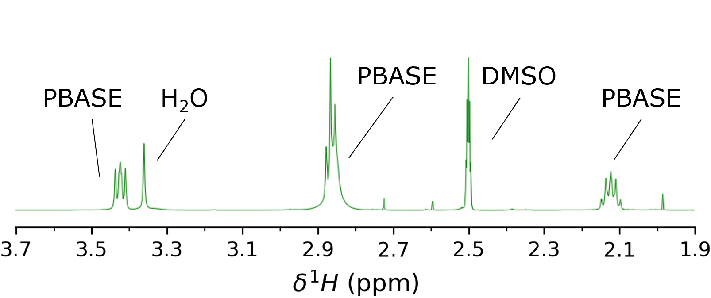
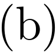
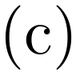
Figure 3: \(^{1}\)H Nuclear Magnetic Resonance (NMR) spectra in the alkyl region. Spectra were taken using DMSO-d\(_6\) as the NMR solvent. (a) and (b) show NMR spectrum for commercially purchased PBASE, from Sigma-Aldrich and Setareh Biotech respectively, while (c) shows the blank spectrum taken with only DMSO-d\(_6\) present. Spectra were taken by Jennie Ramirez-Garcia, School of Chemical and Physical Sciences, Te Herenga Waka \(-\) Victoria University of Wellington. Unlabelled peaks correspond to sample impurities.
The H\(_{2}\)O:DMSO ratio is 1:7 in the blank spectrum, but \(\sim\) 1:3 in the provided samples, possibly indicating the introduction of water to the PBASE during production or storage. However, DMSO is strongly hygroscopic and slight differences in DMSO storage time, as well as differences in humidity during sample preparation, may have had a significant impact on this result [@Lebel1962]. Other impurities are also seen on both PBASE spectra, though their small size indicates they make up only a small percentage of each sample. Strack et al.[@Strack2013] recommend leaving frozen PBASE at room temperature for 15 minutes before exposing it to air to prevent condensation near the PBASE, as this can cause unnecessary H\(_2\)O contamination.
Electrical Characterisation
The transfer characteristics of the carbon nanotube or graphene transistor are often used to verify successful functionalisation and make a statement about the effects of chemical modification. However, this verification usually does not account for the effects of exposing the transistor channel to solvent. Figure 4 (a) and Figure 4 (b) show that by exposing a steam-deposited carbon nanotube network channel to solvents commonly used in PBASE functionalisation processes (Table 1), such as methanol (MeOH) or dimethyl sulfoxide (DMSO), a significant negative shift in channel threshold voltage occurs even after thorough rinsing with deionised water. It appears that the carbon nanotubes have adsorped solvent which persists even after thoroughly rinsing the device. From the shape of the change in the transfer curve, it seems the residual polar solvent molecules capacitively gate the channel [@Artyukhin2006; @Heller2008]. Besteman et al. reported observing a similar effect from prolonged exposure of a single carbon nanotube to dimethylformamide (DMF) [@Besteman2003].
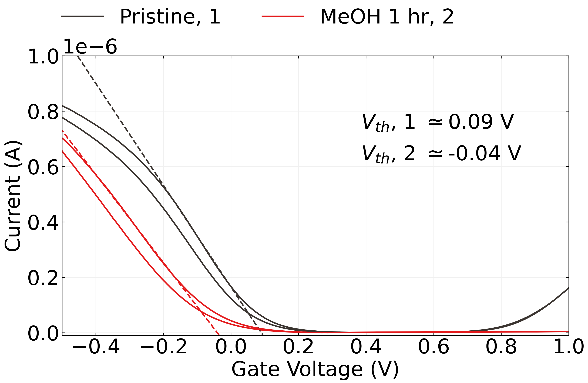
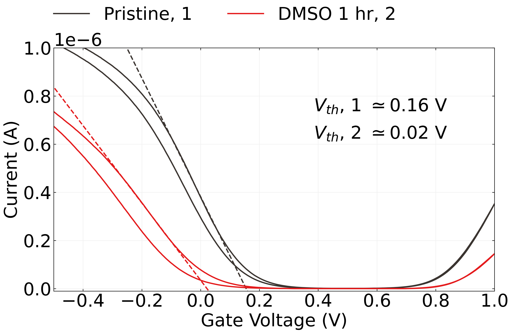
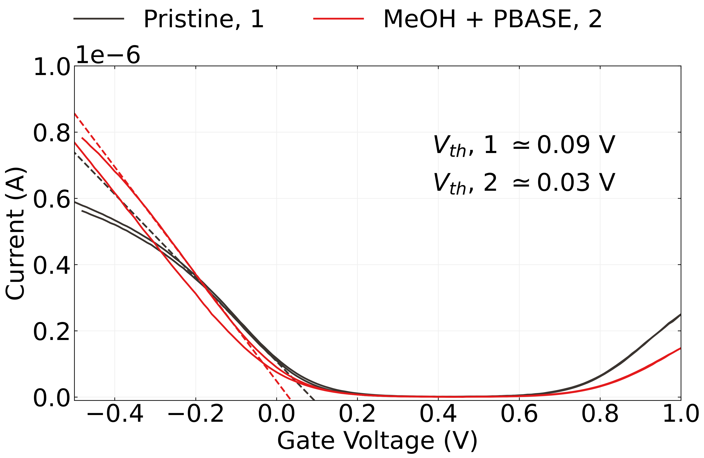
Figure 4: The transfer characteristics of carbon nanotube transistors (\(V_{ds}\) = 100 mV) before and after being submerged in MeOH (a) or DMSO (b) for one hour and subsequently rinsed with deionised water. The change in characteristics of similar transistor channels after being submerged in these same solvents containing 1 mM PBASE for one hour and then rinsed are shown in (c) and (d) respectively. The threshold voltage for the forward sweep of each transfer characteristic curve is also shown.
Capacitive gating results from dense coverage of adsorped molecules on the carbon nanotube surface which have a low permittivity relative to the surrounding electrolyte [@Heller2008]. The relative permittivity of MeOH and DMSO are \(\sim\) 33 [@Mohsen-Nia2010] and \(\sim\) 47 [@Hunger2010] respectively, which are both much lower than the relative permittivity of PBS, \(\sim\) 80 [@Shkodra2021]. From Figure 4 (a) and Figure 4 (b), the threshold shift values found resulting from exposure to each solvent, taking the average of forward and reverse sweep values from a single device, were \(\Delta V = -0.15 \pm 0.02\) V and \(\Delta V = -0.15 \pm 0.01\) V for MeOH and DMSO respectively. The average threshold shift value for a second device exposed to MeOH was \(\Delta V = -0.16 \pm 0.02\) V, indicating that this threshold shift result is reproducible.
Using the same characterisation process as in this work, Murugathas et al.[@Murugathas2019a] showed that the attachment of PBASE to a solvent-deposited carbon nanotube network had little effect on channel threshold voltage, implying the presence of PBASE had not significantly influenced channel gating. Here, an average threshold voltage shift of \(-0.06 \pm 0.04\) V is seen after PBASE functionalisation in MeOH and \(-0.06 \pm 0.01\) V after PBASE functionalisation in DMSO. These threshold voltage shifts are small compared to the shift values from solvent exposure. It is possible that the attachment of PBASE prevents solvent adsorption, and has a small negative gating effect on the channel. Alternatively, while the solvent negatively gates the channel, resulting in a threshold shift of \(-0.15\) V, the PBASE may be counteracting this by positively gating the channel, resulting in a threshold shift of \(+0.09\) V. Murugathas et al. also observed a slight increase in channel conductance after PBASE functionalisation [@Murugathas2019a]. Figure 4 also shows a slight increase in channel conductance post-functionalisation in both Figure 4 (c) and Figure 4 (d) relative to the solvent-only case in Figure 4 (a) and Figure 4 (b). This result implies that the presence of PBASE molecules increases channel mobility and therefore conductance [@Heller2008].
The absorption of organic solvent by the carbon nanotube network has unknown but potentially negative implications for biosensor functionalisation. Use of organic solvents in functionalisation can also attack the encapsulation layer of devices, promoting gate current leakage. In light of these issues, recent work has begun to explore alternative aqueous-based methods for functionalisation of biosensors [@Khan2021]. The discussion here also illustrates the importance of considering each substance used when characterising a device to verify if functionalisation has worked. The qualitative presence of a change in characteristics (or lack of one) over the full process is not sufficient to make conclusive remarks regarding successful functionalisation. A full set of control measurements are required for an understanding of electronic changes occurring during the functionalisation process, in the manner of Besteman et al.[@Besteman2003].
Attachment of 1-Pyrenebutyric Acid
Comparing Attachment Methods
Another linker molecule that can be used to attach receptor molecules to a carbon nanotube or graphene channel is 1-pyrenebutyric acid (PBA or PyBA). The pyrene group in PBA also undergoes pi-stacking with the channel surface. PBA can be reacted with 1-ethyl-3-(3-dimethylaminopropyl) carbodiimide hydrochloride (EDC or EDAC) to form an O-acylisourea intermediate, which then reacts with an amine group on a biomolecule to form an amide or imide bond [@Sehgal1994; @Hermanson2013-4]. The water solubility of EDC means that, unlike PBASE, it is possible to functionalise with EDC dissolved in water rather than in an organic solvent. However, like PBASE, EDC and the O-acylisourea intermediate are prone to hydrolysis, especially in acidic conditions. Therefore, like PBASE, it should be stored at \(-20\) °C, and warmed to room temperature to prevent condensation build-up, since exposure to condensation will hydrolyse the reagent [@Hermanson2013-4]. Furthermore, by adding N-hydroxysuccinimide (NHS) or N-hydroxysulfosuccinimide (Sulfo-NHS or NHSS) to the reaction vessel, PBASE is formed as an active intermediate, which is less prone to hydrolysis and increases the PBA/EDC reaction yield [@Sehgal1994; @Hermanson2013-4; @Hermanson2013-14].
To the best of my knowledge, a full comparison of functionalisation procedures used for linking carbon nanotube and graphene devices to aptamers and proteins with PBA is given in Table 2. By comparing Table 1 and Table 2, it is clear that PBASE is more widely used for non-covalent functionalisation than PBA/EDC. As with PBASE, there are a wide range of process variables used for the PBA functionalisation process. Also notable is the frequent use of polyethylene glycol (PEG) or pyrene-PEG for prevention of non-specific binding (see ?@sec-non-specific-binding for a further discussion of NSB). Despite being less widely used, Mishyn et al.[@Mishyn2022] state a preference for the use of PBA/EDC over PBASE, as they found it gave a larger reaction yield when binding ferrocene to graphene. A potential downside of using PBA/EDC for protein immobilisation is that EDC has numerous ways of interacting with proteins, and not all of these are necessarily desirable. Furthermore, the addition of NHS may cause other issues, such as precipitation of the reaction compound [@Hermanson2013-4]. The greater range of process variables involved in the functionalisation also makes reproducing past results more complex.
Raman Spectroscopy
Raman spectroscopy was used to verify the attachment of PBA to a carbon nanotube network film with a SiO\(_2\) substrate in the manner outlined in ?@sec-raman-characterisation. As highly bundled devices were found to have fewer defects present prior to modification, as discussed in ?@sec-pristine-raman, solvent-deposited films were used for the verification of pyrene attachment to prevent the initial presence of defects influencing the analysis.
Table 2: Comparison of 1-pyrenebutyric acid (PBA) functionalisation processes. 1-ethyl-3-(3-dimethylaminopropyl) carbodiimide hydrochloride (EDC) and NHS or NHSS (N-hydroxysulfosuccinimide) were co-mingled with PBA during each process. Device exposure times to each compound are shown next to the compound concentration. Blank entries indicate there was no mention of the parameter in a particular paper. \(^†\)PEG or PEG pyrene were used to reduce non-specific binding. \(^{††}\)Several pyrene-based linkers were compared and PBA gave an optimal functionalisation result.
Solvent
Channel
PBA (mM)
Time (hr)
EDC (mM)
NHS (mM)
NHSS (mM)
Time (min)
References
DMF
Graphene
0.6
1
-
-
-
120
Gao, 2016\(^†\).
5
2
2
5
-
30
Mishyn, 2022.
CNT
100
3
200
-
-
30
Min, 2012.
7.6
2
8
20
-
120
Xu, 2014.
DI water
CNT
-
-
32
-
12
Overnight
Pacios, 2012\(^†\).
Ethanol
CNT
1
1
100
100
-
20
Filipiak, 2018\(^†\).
Acetonitrile
Graphene
1
1
400
100
-
60
Tong, 2020\(^{††}\).
Borax
CNT
2
24
2.5
-
-
1080
Liu, 2011\(^†\).
DMSO
Graphene
5
1
50
50
-
90
Fenzl, 2017.
Droplets of DMSO solution were placed on three (solvent-deposited) carbon nanotube films taken from the same wafer. The DMSO solution on one film contained 5 mM PBA, the solution on another film contained 5 mM PBASE, and the DMSO on the final film contained no linker molecule. After incubation for 1 hour, films were rinsed for 15 s with DMSO, then for 15 s with IPA to remove excess DMSO while avoiding hydrolysis of the PBASE. After the first set of Raman spectra was taken, the film initially exposed to PBA was further exposed to a solution of 20 mM EDC and 40 mM NHS in \(1 \times\) phosphate buffer saline (PBS) electrolyte for 30 minutes, and a second set of Raman spectra was taken for this film. As in ?@sec-pristine-raman, two spectra taken at each position were processed according to ?@sec-raman-analysis, and the SiO\(_2\) reference peak measured in the wavenumber range 100 cm\(^{-1}\)\(-\) 650 cm\(^{-1}\) was used to normalise the D-band and G-band peaks from the wavenumber range 1300 cm\(^{-1}\)\(-\) 1650 cm\(^{-1}\). The ratio between the average intensity of the D-peak and the G\(^+\)-peak at each position was calculated, and the distribution of ratio values corresponding to each modified film is shown in Figure 5.
Figure 5: A box plot showing the distribution of D-band peak to G\(^+\)-band peak ratios, \(I_D/I_G\), across nine locations for a selection of chemically-modified carbon nanotube films. The D-band and G-band intensities for all samples were first normalised to the intensity peak corresponding to the SiO\(_2\) substrate.
There is a \(\sim 3 \times\) increase in the intensity ratio \(I_D/I_G\) for both the films modified with PBASE and PBA compared to the film which was only exposed to DMSO. Previous works have found that a change in the intensity ratio indicates successful pi-stacking on the carbon nanotube surface, as it indicates successful surface modification of the carbon nanotubes [@Wei2010; @Lan2013].
Wei et al.[@Wei2010] found functionalisation with PBASE altered the ratio by a factor of \(\sim 1.5 \times\), while Lan et al.[@Lan2013] found that functionalisation with PBA altered the ratio by a factor of \(\sim 0.8 \times\). The reason for the large difference between results is not immediately clear, but may result from the significant differences in the pristine composition and morphology of carbon nanotube networks used in each publication, and differences in the functionalisation method used. Across all scan locations in Figure 5, the value found for \(I_D/I_G\) is consistently \(\sim 0.095\) for both PBA and PBASE. Furthermore, subsequent Raman measurements of the PBA-modified film after further functionalisation with EDC/NHS do not show a significant change in \(I_D/I_G\). These results indicate that presence of the NHS ester has little effect on the Raman shift, as expected. Raman spectroscopy therefore cannot be used to distinguish between the presence of PBA and PBASE on the device surface. However, it is clear that functionalisation of the carbon nanotube network with both the PBA and PBASE has led to measurable pi-stacking between the network and the pyrene group attached to each compound.
Electrical Characterisation
Figure 6 shows the transfer characteristics of a carbon nanotube transistor channel at various stages of a PBA/EDC functionalisation, where an excess of N-hydroxysuccinimide (NHS) was added alongside EDC. A solvent-deposited carbon nanotube film was used for the device. The PBA was dissolved in DMSO, and the device channels were exposed to this solution for 1 hour. The change resulting from PBA exposure is shown in Figure 6 (a). The threshold shift with the addition of 5 mM PBA in DMSO for 1 hour is equivalent to the shift seen when only DMSO is added, \(\Delta V = -0.15\) V. The lack of a significant threshold shift attributable to the PBA is a result of pyrene having a neutral charge state. Any contributions from the charged carboxyl group are screened from the carbon nanotube sidewalls by surrounding water molecules [@Lerner2012]. However, as in the case of the addition of PBASE, there also appears to be an increase in hole mobility, which may be due to the pyrene groups increasing connectivity within the carbon nanotube network [@Murugathas2019a].
Figure 6: Transfer characteristics of a carbon nanotube transistor before functionalisation alongside the transfer characteristics (a) after being submerged in DMSO with 5 mM PBA in red, (b) after being submerged in PBS with 20 mM EDC and 40 mM NHS in blue, and (c) after being submerged in fresh PBS in green. The dashed lines in (d) are linear fits to the subthreshold slope of each curve in the forward direction, and are shown alongside the threshold voltages corresponding to each fit.
Subsequently, the device was rinsed with \(1 \times\) PBS and exposed to 20 mM EDC and 40 mM NHS in \(1 \times\) PBS electrolyte for 30 minutes. Figure 6 (b) shows the change resulting from subsequent EDC/NHS exposure. When EDC/NHS is added, a threshold shift of \(\Delta V \sim -0.08\) V was observed on multiple channels. The exposure to EDC/NHS negatively shifts the transfer characteristic curve, most likely due to the PBA present reacting to form positively-charged O-acylisourea esters and negatively gating the attached carbon nanotube network [@Heller2008; @Hermanson2013-4]. Figure 6 (c) shows that this shift is not significantly affected by further exposure of the channel to PBS. The lack of a change in gating may imply that hydrolysis over the course of one hour is insufficient to hydrolyse a significant proportion of the attached O-acylisourea or PBASE back to PBA, leaving them available for reaction with biomolecule amine groups. A further test could be performed to see if leaving the device submerged in water over a longer time period to check if ester hydrolysis eventually affects threshold voltage in a significant manner, but this was considered to be outside the scope of this work.
Attachment of PEGlyated Pyrene-Based Linkers
Pyrene-NTA, Pyrene-Biotin and PEGylation
Through chemical coupling/conjugation, it is possible to replace the NHS ester group on PBASE with other groups that can undergo binding reactions with proteins. Unlike PBASE, these groups do not suffer the drawback of being readily hydrolysed. For example, PBASE can be modified with N\(\alpha\),N\(\alpha\)-Bis(carboxymethyl)-L-lysine hydrate (also known as N-(5-Amino-1-carboxypentyl)iminodiacetic acid, amine-NTA, AB-NTA) to produce pyrene-nitrilotriacetic acid. The attached NTA group is able to chelate with metal ions such as Cu\(^{2+}\) or Ni\(^{2+}\), which then can then coordinate with polyhistidine-tags attached to a protein [@Holzinger2011; @Fruh2011; @Amano2016; @Chang2017]. Use of Cu\(^{2+}\) ions over Ni\(^{2+}\) gives stronger histidine bonding and less non-specific adsorption [@Chang2017]. Functionalisation using the NTA-Ni\(^{2+}\) chemistry was successfully used to attach mammalian odorant receptors to a single carbon nanotube for detection of eugenol vapour in real-time [@Goldsmith2011]. Pyrene-biotin (pyrene butanol biotin ester) can also be produced for attaching avidin or strepavidin [@Holzinger2011]. As avidin and strepavidin are tetrameric, they can be attached to both pyrene-biotin and biotinylated avi-tagged proteins simultaneously via strong non-covalent bonding, therefore linking the transducer and receptor [@Star2003a; @Dundas2013; @Hermanson2013-11; @Fairhead2015]. As the presence of his-tags and avi-tags on proteins can be readily controlled, these methods offer improved specificity and directionality over the traditional amide bonding seen earlier.
It is also possible to attach biocompatible [@Chen2004] polyethylene glycol (PEG) chains to a pyrene group and modify them with reactive groups such as NTA and biotin to attach proteins in the manner outlined in the previous paragraph [@Hermanson2013-18; @Meran2018]. Once modified with PEG, the hydrophilicity of the PEG increases the water solubility of pyrene linkers, making it possible to perform a full functionalisation procedure exclusively in aqueous solution [@Chen2004; @Hermanson2013-18]. By setting the length of the PEG chain, the size of the linker molecule can be controlled; selection of a short chain is important to ensure attached receptors remain within the Debye length of the transducer [@Shkodra2021]. Note that PEG naturally repels proteins and can also bond to carbon nanotubes, and both behaviours have uncertain implications for successful protein functionalisation [@Chen2004]. However, functionalisation of both carbon nanotube and graphene transducers with pyrene-PEG-biotin (PPB) has previously been used for the successful detection of streptavidin [@Star2003a; @Miki2019]. PEG is also charge neutral, so its presence is not expected to significantly affect device characteristics [@Chen2004].
The PEGlyated linkers used in the following sections were purchased pre-prepared. Pyrene-PEG-NTA (2 kDa) was purchased from Nanocs, while pyrene-PEG-FITC (2 kDa, 10 kDa), pyrene-PEG-rhodamine (3.4 kDa), mPEG-Pyrene (10 kDa) and pyrene-PEG-biotin (10 kDa) were purchased from Creative PEGworks.
Identifying Functionalisation Obstacles using Fluorescence Microscopy
General Overview
Various dyes and fluorescent tags were used to investigate approaches for identifying successful attachment of biomolecules to a carbon nanotube or graphene surface with fluorescence microscopy. The dyes included fluorescein isothiocyanate (FITC), Rhodamine B and Cyanine 3 (Cy3). Green fluorescent protein was also used for this testing process. It is important to note that these dyes and the GFP chromophore all contain benzene rings which are able to pi-stack with carbon rings to some degree [@Nakayama-Ratchford2007; @Tang2012; @Khrenova2019; @Qiu2019]. However, there is also significant variation in the extent to which this pi-stacking occurs, which can be seen by comparing Figure 7 (a) and Figure 7 (b). Here, a clear, specific interaction is seen between Rhodamine B and graphene, but little interaction between FITC and graphene is observed, even when a longer exposure time is used when imaging. Whether the addition of pyrene linker groups to these dyes or dye-modified biomolecules was able to improve attachment was next investigated. This process led to the identification of multiple issues that could impede a successful device functionalisation.
Figure 7: Four 200 µm \(\times\) 200 µm graphene squares modified with the dyes (a) fluorescein isothiocyanate (FITC) and (b) Rhodamine B. No pyrene/PEG/pyrene-PEG was attached to these dyes. In (a), an FITC filter and 6.5 s exposure time was used, and in (b) a Texas Red filter and 1.4 s exposure time was used.
Both SU8 and AZ\(^\circledR\) 1518 photoresist fluoresced under a variety of microscope filters, resulting from light interacting with the photoactive component present in both resists [@Pai2007]. This background fluorescence was found to drown out fluorescence from a dye-functionalised device channel, and so photoresist encapsulated devices were not used for fluorescence imaging. (Consider a photograph of a dim outdoor lamp; if the photograph was taken on a starless night, the light from the lamp would show up clearly, but with the sun out the light would be very difficult to see regardless of how the photograph was taken). A different type of encapsulation could potentially be used to verify linker attachment with fluorescence after a device has been encapsulated. These alternative encapsulation methods for use with fluorescence microscopy are discussed in ?@sec-future-work-fabrication.
Photoresist Contamination
An functionalisation issue quickly encountered when characterising pyrene-PEG-FITC (PPF) functionalisation via fluorescence microscopy was an unwanted secondary interaction between the linker and residual photoresist. Figure 8 (a) and Figure 8 (b) are fluorescence images of SU8 encapsulation (using the pre-2023 mask) before and after being exposed to PPF. Despite the same microscope settings being used to take the images (filter, ISO, contrast, exposure time), the SU8 exposed to PPF appears much brighter than the pristine SU8. This result indicates that the linker appears to have an extensive interaction with the photoresist via an unknown mechanism. No fluorescence is seen from the device channel. The length of exposure time required to see fluorescence from the modified channel would lead to fluorescence from the modified linker attached to the photoresist (as well as the photoresist itself) flooding the image with light. Therefore, it is not clear whether the carbon nanotubes have been functionalised with the dye-modified linker. Out of caution, we can assume that this secondary interaction is not desirable for successful functionalisation.
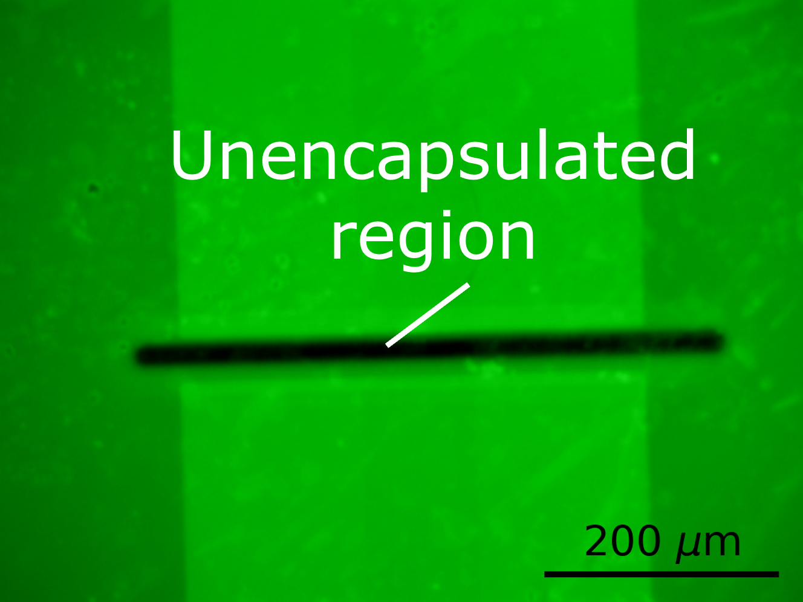
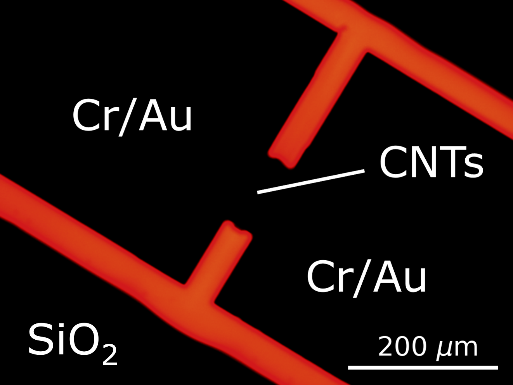
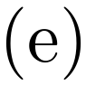
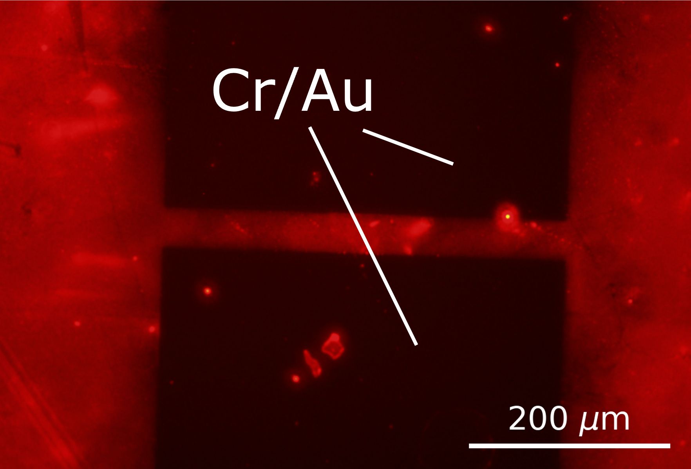
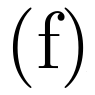
Figure 8: A fluorescence image of a SU8-encapsulated carbon nanotube device is shown in (a), while (b) shows the same channel after modification with an solution of 1 mM Pyrene-PEG-FITC. A 0.35 s exposure time and FITC filter were used for (a)-(b). The fluorescence image in (c) shows an unencapsulated channel, while (d) shows the same channel after Cy3-tagged aptamer exposure. A 10 s exposure time and mCherry filter were used for (c)-(d). The fluorescence images in (e) and (f) show devices pre-coated with a thin layer of photoresist then submerged in Cy3-tagged aptamer, where the device in (f) was hardbaked before aptamer exposure. An mCherry filter and 30 s exposure time were used for for (e)-(f).
A similar interaction was seen between AZ\(^\circledR\) 1518 photoresist and fluorescent-tagged, amine-terminated aptamer. An unencapsulated carbon nanotube network device, fabricated using the pre-Jun 2022 process outlined in ?@sec-fabrication, was incubated with 500 nM Cy3-tagged aptamer in Tris solution at 4 °C overnight. The aptamer was first denatured by heating in a water bath at 95 °C for 5 minutes, then cooling in an ice bath for 10 minutes before use. Figure 8 (c) and Figure 8 (d) are fluorescence images of the device channel region before and after exposure to aptamer. A thick red ring is visible around the electrodes after functionalisation, despite no PBASE being used to tether the amine-terminated aptamer. It appears that these bright patches correspond to residual photoresist which has not been completely removed from the carbon nanotube square in the development process. These patches have then interacted with the aptamer, causing them to appear bright under the fluorescence microscope. Beyond potentially interfering with functionalisation, photoresist residue blocking a device channel will prevent interaction with the Tris solution and prevent sensing.
To test whether residual resist could be prevented from interacting with aptamer by crosslinking the resist, two unencapsulated devices were prepared as follows. Devices were first spincoated with AZ\(^\circledR\) 1518 in the manner described in ?@sec-fabrication. Next, the majority of resist was removed by soaking the device in acetone for 1 minute. This process left a thin coating of photoresist on the devices. One of these devices was then hardbaked at 200 °C for 1 hour. Both devices were subsequently functionalised in the following manner:
The unencapsulated device was submerged in 1 mM PBASE in methanol solution for 1 hour.
The device was then rinsed with methanol and Tris.
1 µM Cy3-tagged aptamer was denatured by heating in a water bath at 95°C for 5 minutes, then cooling in an ice bath for 10 minutes before use.
The device was incubated with aptamer in Tris at 4 °C overnight.
Fluorescence microscope images of channels from each device are shown in Figure 8 (e) and Figure 8 (f), where the latter is the device hardbaked before functionalisation. By comparing the two images, it is apparent that hardbaking the AZ\(^\circledR\) 1518 photoresist significantly reduces the amount of fluorescent aptamer attached to the surface. This result is an indication that sufficient heating of the photoresist can prevent it interacting with PBASE or amine-tagged biological material. However, there is still some Cy3-tagged aptamer fluorescence visible in Figure 8 (f). It appears that hardbaking has not completely prevented photoresist from interacting with the aptamer. It is possible that heating from the bottom of the device is insufficient to hardbake the photoresist layer completely, an effect that would be amplified for the thick photoresist layer on encapsulated devices. Therefore, from Jun 2023 onwards devices were vacuum annealed for 1 hour at 150 °C prior to functionalisation. This approach was taken to ensure photoresist was heated from above as well as below and made chemically inert across its surface.
This result demonstrates the use of fluorescence microscopy as a tool to detect residue and test suitable residue elimination measures. Further testing showed that performing a 1 minute flood exposure (for positive resist only) then placing a device in AZ\(^\circledR\) 326 developer for three minutes (for both positive and negative resist) was highly effective at removing photoresist residue. Both these development and annealing techniques were used for all functionalised devices in subsequent sections.
Hydrophobicity of Carbon Nanotubes and Graphene
As PEGlyated linker dissolves well in aqueous solution, initial fluorescence imaging focused on functionalising devices with these linkers dissolved in \(1 \times\) PBS. It was hoped that by keeping the device channels in a pH-controlled environment, the channel surface would be made more suitable for the attached receptors. Figure 9 (a) shows a graphene film after exposure to pyrene-PEG-rhodamine (PPR) in \(1 \times\) PBS solution for 1 hour. The pyrene-PEG-rhodamine has interacted with the SiO\(_2\) substrate (discussed further in Section 1.5.4) but not the graphene film. The graphene has not attached to the pyrene or rhodamine due to the highly hydrophobic graphene surface repelling the surrounding solution, preventing pi-stacking from occurring. The hydrophobicity of the graphene surface is not intrinsic to graphene. Instead, it results from a hydrocarbon layer which forms on the channel surface when exposed to air, primarily composed of long-chain alkanes [@Ashraf2014; @Palinkas2022]. A hydrophobic layer wiil also form on carbon nanotube networks [@Stando2019; @Park2022]. Treatment with oxygen plasma at 5 W for 15 s has previously been found to remove this hydrocarbon layer, restoring the intrinsic hydrophilicity of graphene [@Shin2010]. Storing the graphene surface in deionised water rather than air prevents the return of this hydrocarbon layer [@Ashraf2014]. The use of a relatively low power plasma ensures damage to the graphene layer is minimised.
Treatment of an unencapsulated carbon nanotube network device at 5 W for 15 s at 300 mTorr greatly reduced the contact angle of a water droplet placed on the device surface. The water droplet before and after plasma treatment is shown inset in Figure 9 (a) and Figure 9 (b) respectively. A graphene film was then functionalised with pyrene-PEG-rhodamine in \(1 \times\) PBS in the same manner as for the film in Figure 9 (a), except with the same plasma treatment performed on the film less than 1 minute before functionalisation. The result is shown in Figure 9 (b). The graphene now appears to interact with the pyrene-PEG-rhodamine. These results both indicate that the plasma treatment is increasing the hydrophilicity of the device surface, improving the ability of pyrene-PEG-rhodamine to \(\pi\)-stack with graphene. The disadvantage of this procedure is that the plasma cleaning introduces defects to the graphene surface which may be undesirable for device electrical behaviour. Furthermore, it was often found that devices functionalised in this manner had their conductance drop significantly after functionalisation, even though plasma treatment itself did not significantly alter device conductance. Solvent was therefore used for the initial linker functionalisation in ?@sec-biosensing-iORs, as a plasma cleaning step was not required for linker attachment.
Substrate Interaction with Linker Molecules
Another issue that arose when verifying surface functionalisation was the interaction between pyrene linker and the SiO\(_2\) substrate. This interaction meant it was difficult to discern whether the pyrene group was interacting in a specific manner with the channel film. It was confirmed that pyrene-PEG was interacting with SiO\(_2\), rather than residual photoresist or nanomaterial, by performing a pyrene-PEG-rhodamine functionalisation on pristine SiO\(_2\), as shown in Figure 9 (c). The PEGlyated linker supplier suggested that the surface should be thoroughly rinsed with surfactant to remove weakly-bound pyrene-PEG-FITC attached to the SiO\(_2\), while preserving the pyrene-PEG-FITC strongly attached via pi-stacking to the graphene or carbon nanotube film [@CreativePEGworks2022]. A novel process was then developed to remove pyrene-PEG-FITC from the SiO\(_2\). The film was rinsed with DI water for 30 s, placed in m-CNT dispersion solution (NanoIntegris) for 5 minutes at 70 °C while agitating with a pipette, and finally rinsed with DI water, ethanol, acetone, IPA and nitrogen dried. A the graphene region before cleaning is shown in Figure 9 (d), while the results of cleaning are shown in Figure 9 (e) and Figure 9 (f). The majority of pyrene-PEG-FITC was removed in regions with no graphene, but remained where graphene was present, indicating specific, pi-stacking interaction took place between the pyrene-PEG-FITC and graphene. However, this surfactant rinse step was not used when performing functionalisation with biological materials, to prevent damage to the lipid membranes used.
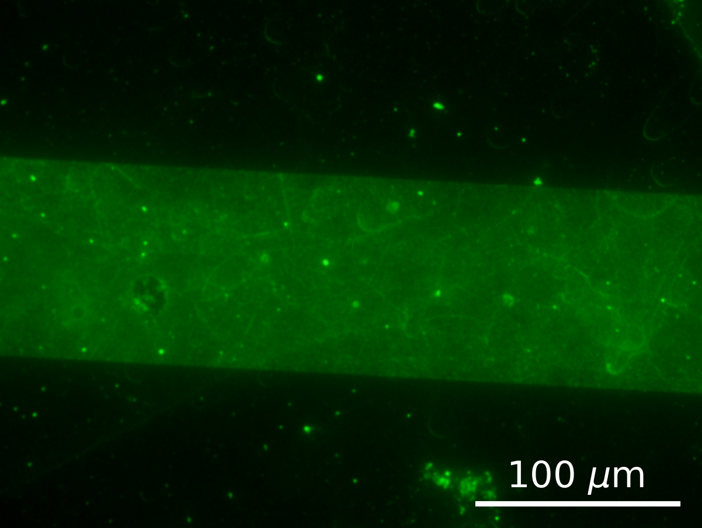
Figure 9: Fluorescence images of a 1000 µm \(\times\) 100 µm graphene channel. (a) was not oxygen plasma cleaned before functionalisation with pyrene-PEG-rhodamine (PPR), while (b) was oxygen plasma cleaned immediately before PPR functionalisation. Insets show a water droplet on an unencapsulated device before (a) and after (b) being treated with O\(_2\) plasma; (c) shows a pristine SiO\(_2\) surface after PPR exposure. (a), (b) and (c) were taken using a Texas Red filter and a 1.8 s exposure time. (d) was functionalised with 1 mM PPF in PBS after oxygen plasma treatment, while (e) and (f) were functionalised with 1 mM PPF after oxygen plasma treatment, then cleaned with surfactant (m-CNT surfactant, NanoIntegris). (d), (e) and (f) were taken using an FITC filter, with 1.6 s, 7.5 s and 7.75 s exposure times respectively.
Coffee-Ring Effect
From Table 1, full device submersion appears to be the most common approach for functionalisation with solution containing linker molecules like PBASE. However, some groups placed small droplets of solution onto the device channels when functionalisation, and this approach was tested as part of the fluorescence verification work. For functionalisation with his-tagged green fluorescent protein, after plasma cleaning at 5 W for 15 s at 300 mTorr, a 4 µL droplet of 100 µM pyrene-PEG-NTA in \(1 \times\) PBS was placed on each graphene device channel and left covered in a humid environment for 15 minutes. The device was then rinsed with \(1 \times\) PBS, submerged in 10 mM NiSO\(_4\) in \(1 \times\) PBS for 1 hour, rinsed in \(1 \times\) PBS, then submerged in 10 mL of 100 ng/mL his-tag GFP solution (Thermofisher) overnight. Fluorescence microscope imaging showed that a ring of biomaterial would build up around the outer edge of regions where pyrene-PEG-NTA had been present, as seen in Figure 10.
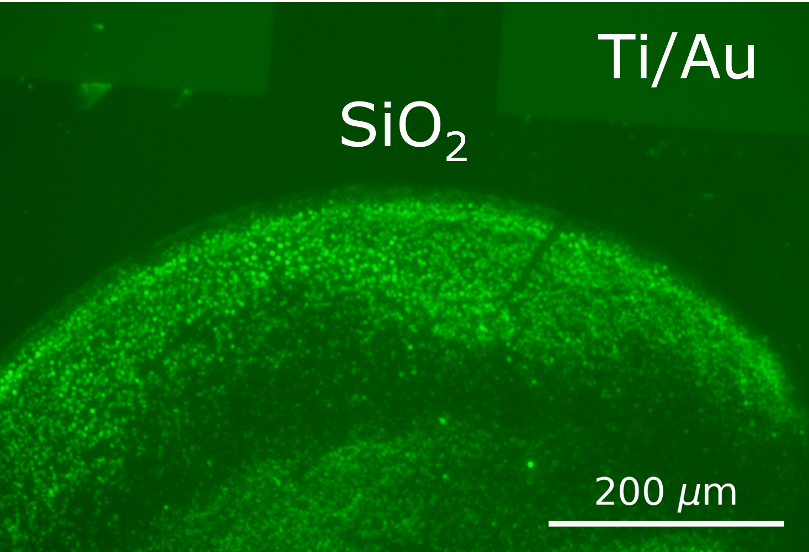
Figure 10: Both (a) and (b) show a build-up of his-tag GFP at the edges of the droplet region where pyrene-PEG-NTA had been present, taken using an GFP filter and a 5 s exposure time. On the right hand side of (b), no his-tag GFP is visible on the metal electrode, as no pyrene-PEG attaches to the metal electrodes.
It appears this non-specific binding is a result of the his-tag GFP attaching to a dense region of pyrene-PEG-NTA at the edge of the functionalisation droplet. This accretion of pyrene-PEG-NTA at the edge of the droplet is a result of the coffee-ring effect, where the evaporation of the droplet leads to transport of particles to the droplet edges via capillary flow [@Deegan1997; @Shimobayashi2018]. As this gradient in surface coverage of attached proteins has unknown consequences for sensing, in the subsequent chapter devices were always functionalised by submerging them in solution instead of dropcasting.
Conclusion
It has been established in the literature that the pi-stacking reaction mechanism between pyrene-based linkers and graphene and carbon nanotube network field-effect transistors can be used to create working biosensors. The previous use of various linker molecules for biosensor functionalisation was investigated. Despite the wide use of 1-pyrenebutanoic acid N-hydroxysuccinimide ester (PBASE) and 1-pyrenebutyric acid (PBA) for functionalisation of biosensors, the literature shows a significant variation in the methods used for attachment of linker molecules to a transistor channel. The most common methods, using 6 mM PBASE dissolved in dimethylformamide or 1 mM PBASE in methanol, stem directly from the first documented use of PBASE for functionalisation of carbon nanotube biosensors. In the last 6 years, more research has been done into optimising the PBASE methodology for graphene devices, but there is still disagreement in the literature over whether minimising or maximising PBASE coverage on a graphene device channel is desirable for sensing. Due to disagreement in the literature around suitable non-covalent methods for biosensor functionalisation, several steps were taken to identify a rapid and simple method for verifying successful functionalisation, and to locate any potential barriers to a successful functionalisation.
The advantages and disadvantages of these linker molecules were first compared. Hydrogen NMR indicated that water was present in PBASE samples prepared in DMSO. The potential for PBASE to hydrolyse during functionalisation means that the presence of water is strongly undesirable. The reaction of PBA with EDC in the presence of NHS is an alternative functionalisation approach which is less prone to hydrolysis. However, this process has its own disadvantages, such as undesirable protein interactions and the increased amount of steps and process variables involved. Pyrene-NTA is also less prone to hydrolysis than PBASE, but unlike PBASE or PBA/EDC, interacts with a specific protein tag (his-tag). PEGlyation of the pyrene-NTA linker also means that the entire functionalisation process can be performed in aqueous solution, avoiding the introduction of non-organic solvents. This approach is desirable, since the non-aqueous solvents traditionally used for functionalisation may have negative impacts on device behaviour. For example, carbon nanotube device channel transfer characteristics were found to undergo a significant shift of \(\Delta V = -0.15 \pm 0.02\) V when exposed to DMSO or MeOH for 1 hour.
Next, it was verified that the pyrene groups of the linker molecules of interest were attaching successfully to either carbon nanotubes or graphene. Raman spectroscopy showed that incubating a highly-bundled carbon nanotube film in 5 mM PBASE or PBA in DMSO for 1 hour increased \(I_D/I_G\) by a factor of \(\sim 3\) relative to the DMSO-only case. Incubating a steam-deposited carbon nanotube device in a 1 mM concentration of PBASE in methanol or DMSO for 1 hour was found to cause a significant increase in device on-current relative to the solvent-only case, and a similar increase in on-current was seen for 5 mM PBA in DMSO relative to the DMSO-only case. When a PBA-functionalised device was placed in aqueous solution with 20 mM EDC and 40 mM NHS for 30 minutes, a further increase in on-current was seen. Fluorescence microscopy was used to demonstrate the successful attachment of pyrene-PEG to graphene using an attached FITC probe, where immersing a graphene film in 1 mM pyrene-PEG in ethanol led to the channels becoming brightly fluorescent relative to the background using a 1 s exposure time.
Various obstacles to successful functionalisation were also encountered and addressed using fluorescence microscopy. Photoresist contamination was addressed with exposure and development steps before functionalisation, with the exposure skipped for negative-resist encapsulated devices. Hydrophobicity of graphene films was addressed by plasma treatment before functionalisation in aqueous solution. A surfactant rinse was used to distinguish between weak substrate-linker interaction and pi-stacking between linker and the channel. Finally, coffee-ring distribution of linker was addressed by always fully submerging the device in linker when functionalising.
.png)